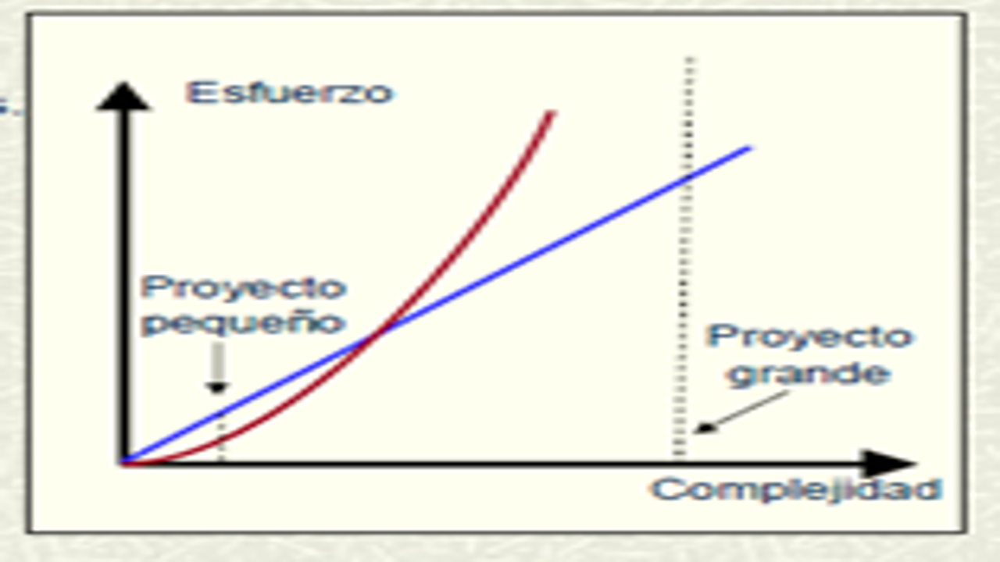

|
|
|
|  |
Es una propiedad importante de un proceso de desarrollo del Software.
Describe si el ezfuerzo que se requiere en el desarrollo de un proyecto varia suavemente en corcondancia con su complejidad.
Cuando la complejidad de un proyecto crece: *aumentan los niveles de abstracción que usan. *Se incrementan las intercomunicación entre los miembros. *Es mas dificil localizar los errores
Formas de conseguir la Escalabilidad: Disponer de diferentes escalas temporales para crear las actividades y hacer que las guias y plantillas tengan optatividad de acuerdo con las caracteristicas del proyecto
La propiedad de escalabilidad representa que si para desarrollar un proyecto de complejidad (y) es necesario realizar un esfuerzo (x), por ejemplo para desarrollar un proyecto de complejidad (100y) se requiere un esfuerzo (100x) (donde c es una constante)
En el momento que un proyecto crece: los objetivos se hacen menos concretas y mas globales, el costo de los errores que hay se debe corregir incrementan debido a que aumentan la posibilidad de interferencias.